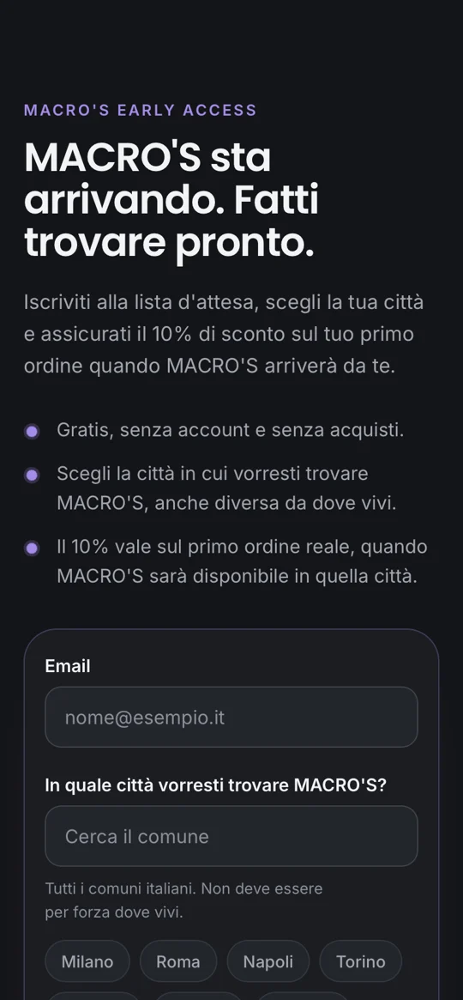

stevenbasalari
Sto per aprire un ristorante dove decidi tu i macro.
MACRO'S Early AccessLanding page, app e simulazione dell'ordine tramite totem esistono già. Steven Basalari entra come socio, si deposita il marchio e si pubblica la Early Access.

Steven Basalari annuncia il progetto in tutta Italia tramite i suoi canali social. Con la Early Access si verificano la prima traction e la prima città dove aprire.
Sto per aprire un ristorante dove decidi tu i macro.
MACRO'S Early AccessPer un'ulteriore validazione e per mettere a rischio meno capitale nella fase di lancio, si apre una ghost kitchen nella città che ha avuto più voti (verosimilmente Milano). Solo delivery o ritiro, con ordini dall'app proprietaria: niente commissioni a Glovo, Deliveroo e Just Eat.
Se il progetto viene validato e consolidato, si apre il primo ristorante con coperti, totem e addetti al servizio al tavolo.
Secondo store a Milano quando il primo regge. Ghost kitchen nella città successiva della classifica Early Access, poi il suo ristorante.
Tutte le cifre sono stime da verificare con preventivi e dati reali. Le animazioni di iscritti, ordini e città sono solo illustrative.